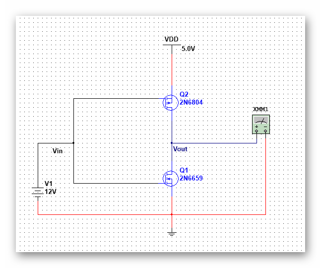

| 模拟集成电路 | |
目录： 一之MOS器件 二之单级放大器 三之差动放大器 四之电流镜偏置 五之实际电路1 六之实际电路2 七之实际电路3 八之实际电路4 九之实际电路5 十之实际电路6 十一之实际电路7 十二之实际电路8 十三之实际电路9 十四之实际电路10 十五之实际电路11 十六之实际电路12 十七之实际电路13 十八之实际电路14 返回页： 类似页：
|
四、有源负载的共源极受到Vin控制的PMOS负载。 上面的PMOS与下面的NMOS是电流反向的，所以增大Vin会是Vout降低来自M1的Id1拉低，和Id2的拉低。 准确的表达式Av=-（gm1+gm2）*（ro1+ro2）， 显然，这个电路的增益还是可观的，但是可以还是问题存在。 一个是Vdd和Vth直接作用于偏置电流，（偏置电流为PVT强函数）。 这使得漏电流会随之变化。 第二个就是电源噪声会放大。这个问题在下面的学习会有详细的分析。 这说明CMOS也是可以作为放大电路的。
|
|---|---|